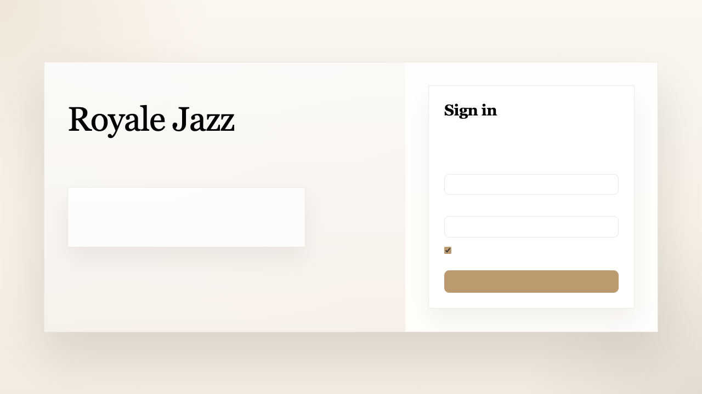

The Royale Jazz admin dashboard is the hotel’s internal workspace for operations and management. It is used to control branding, manage reservations, assign rooms, track guest history, maintain room inventory, and manage staff access.
The login screen is branded from the company settings. If no company logo has been added yet, no logo will display. Owners are taken to the Company page after login, while Managers and Front Desk users are taken to the Dashboard.

There are three user roles in the system: Owner, Manager, and Front Desk.
| Section | Owner | Manager | Front Desk |
|---|---|---|---|
| Company | Yes | No | No |
| Dashboard | Yes | Yes | Yes |
| Reservations | Yes | Yes | Yes |
| Guests | Yes | Yes | Yes |
| Rooms | Yes | Yes | Yes |
| Properties | Yes | Yes | No |
| Staff Access | Yes | No | No |
Owners can manage company branding, hotels, staff access, reservations, rooms, guests, and property information.
Managers can run daily hotel operations, including reservations, guests, rooms, and property content, but cannot manage company settings or staff access.
Front Desk users focus on live guest operations: arrivals, departures, reservations, room assignment, and guest history.
A staff member must already have a login account before access can be granted to a hotel. After that, an Owner can open Staff Access and grant the user the correct role.
Staff Access.The Company page is owner-only and controls the overall look and feel of the admin dashboard.
Owners can update:
Owners can also add hotels from this page by entering the hotel’s details and saving the new record.
The Reservations page is the main booking management screen. Staff can create, edit, confirm, cancel, check in, check out, assign rooms, and delete reservations from this area.
A reservation can also be marked Cancelled.
Reservations.Add Reservation.Reservations.Pending.Confirm.The Guests page gives the team a running history of guest contact details, spend, stay count, active stay information, and notes.
The Rooms page manages both room types and physical room inventory. Staff can maintain room status, housekeeping state, occupancy, and media attached to room types.
The Properties page is available to Owners and Managers and is used for hotel content and configuration management.
Dashboard.Reservations and prepare any pending arrivals.Owners manage the company, hotels, staff access, and all hotel operations.
Managers manage reservations, guests, rooms, and property content.
Front Desk manages day-to-day booking activity, guest arrivals, room assignment, and departures.